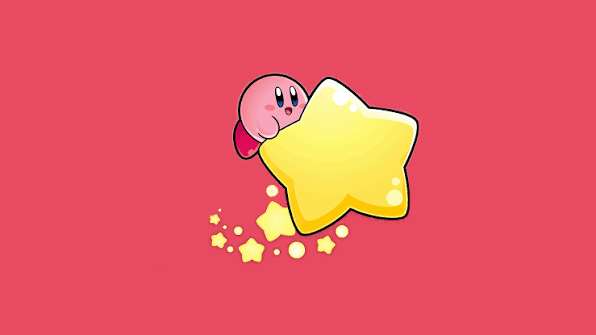

Kirby
The Origins: A Placeholder That Became a Superstar
In 1992, a 22-year-old game designer named Masahiro Sakurai working at HAL Laboratory set out to create a game that anyone could enjoy, regardless of their skill level. During early development on the Game Boy, he used a simple round ball sprite as a temporary placeholder, but the team fell in love with the shape and decided to keep it as their permanent main character, launching one of Nintendo's most creative and enduring franchises.

- The Name Battle: The character was originally named "Twinkle Popopo" during development, but Nintendo renamed him "Kirby" to honor John Kirby, the prominent American lawyer who successfully defended Nintendo in the 1982 Universal Studios lawsuit.
- The Colour Dispute: Because the original game was on the monochrome Game Boy screen, Shigeru Miyamoto assumed the character was yellow, while creator Masahiro Sakurai always intended him to be pink; the American box art for the first game mistakenly colored Kirby completely white.
- The Inhalation Mechanic: In his debut title, Kirby could only inhale and spit out enemies, but his iconic "Copy Ability"—which allows him to absorb the unique powers, attacks, and hats of his enemies—was introduced in his second game to add deep strategy for veteran players.
Chronological Eras & Evolution
The Game Boy and NES Roots (1992–1996)
Key Titles: Kirby's Dream Land (1992), Kirby's Adventure (1993), Kirby's Dream Land 2 (1995)
- Introduced the magical world of Planet Popstar, Dream Land, and Kirby's perpetual rival, the gluttonous self-proclaimed ruler King Dedede.
- Kirby's Adventure pushed the late-stage graphical limits of the NES, introducing the Copy Ability and the mysterious, masked swordsman Meta Knight.
- Brought in unique animal companions like Rick the Hamster, Coo the Owl, and Kine the Sunfish to expand Kirby's platforming traversal options.
The Experimental and 16-Bit Era (1996–2003)
Key Titles: Kirby Super Star (1996), Kirby's Dream Land 3 (1997), Kirby 64: The Crystal Shards (2000)
- Kirby Super Star revolutionized the series by compiling eight distinct games into one, introducing helper companions and specialized movesets for individual copy abilities.
- Kirby 64 pioneered power-mixing mechanics, allowing players to combine two distinct copy abilities into entirely unique, weaponized mutations.
- Branched out into distinct, non-traditional genres, including the cult-classic racing game Kirby Air Ride and various puzzle spin-offs.
The Touch and Fabric Innovations (2004–2015)
Key Titles: Kirby & the Amazing Mirror (2004), Kirby: Canvas Curse (2005), Kirby's Epic Yarn (2010)
- Utilized the early hardware innovations of the Nintendo DS to pioneer stylus-driven, touch-screen movement systems that bypassed traditional d-pad controls.
- Transformed the entire art style of the franchise into highly praised, physical aesthetic materials like patchwork cloth, yarn, and clay modeling.
- Shifted the core gameplay formula into open-ended, Metroidvania-style labyrinth exploration with four-player simultaneous cooperative options.
The Modern and 3D Era (2016–Present)
Key Titles: Kirby Planet Robobot (2016), Kirby and the Forgotten Land (2022), Kirby's Return to Dream Land Deluxe (2023)
- Marked the massive structural transition of the core franchise into fully open, expansive 3D spaces with Kirby and the Forgotten Land.
- Introduced reality-warping gimmicks like customizable robotic armor suits and "Mouthful Mode," where Kirby stretches over massive real-world objects like cars and vending machines.
- Solidified Kirby's massive global presence as an pop-culture icon, celebrated for hidden lore that contrasts cheerful aesthetics with cosmic horror final bosses.